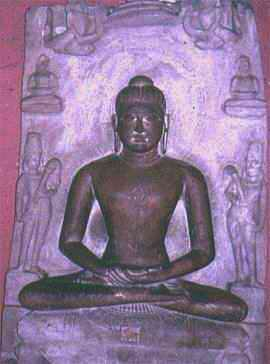

Seratus Tokoh yang Paling Berpengaruh dalam
Sejarah
99. MAHAVIRA (599 SM - 527 SM)
Mahavira (yang artinya "pahlawan besar") adalah nama yang biasa digunakan kaum Jain untuk Vardhamana, tokoh utama pengembang agama mereka.
Vardhamana dilahirkan sekitar tahun 599 SM di India sebelah timur laut, di daerah yang sama dengan Gautama Buddha dilahirkan walaupun segenerasi lebih dulu. Anehnya, peri kehidupan kedua orang itu banyak persamaannya yang menarik. Vardhamana anak terkecil seorang pemuka, dan seperti juga Gautama dibesarkan dalam gelimang kemewahan. Di umur tiga puluh tahun, dia jauhkan kekayaan, familinya (dia punya istri dan seorang anak perempuan), meninggalkan lingkungannya yang nyaman, dan memutuskan mencari kebenaran dan kepuasan spirituil.
Vardhamana menjadi pendeta aliran disiplin Parsvanatha yang meski kecil namun teramat keras aturannya. Selama dua belas tahun dia melaksanakan meditasi dan renung diri, dan selama itu melaksanakan batasan-batasan moral serta hidup dalam kemiskin-papaan. Kerap puasa, tak punya milik pribadi dalam bentuk apa pun, tidak sebuah cangkir atau pun piring untuk meneguk air dan mengumpulkan sesuap nasi pemberian orang. Meskipun mulanya ada dia berbaju, tetapi kemudian dicampakkannya dan berjalan kian kemari dalam keadaan tubuh sepenuhnya telanjang bulat. Dia biarkan serangga merayapi badannya dan tak diusirnya walau binatang itu menggigit kulitnya. India itu tempatnya orang-orang suci berkeliaran kian kemari, masuk kampung keluar kampung, melompati got dan selokan, jauh lebih banyak dari sebangsanya di Barat. Walau penampilan dan tingkah laku Mahavira sering-sering menimbulkan godaan orang, cercaan, hinaan dan gamparan, toh kesemuanya itu ditelan dan diendapnya belaka tanpa balasan.
Tatkala umurnya mencapai empat puluh dua tahun, Mahavira memutuskan bahwa dia pada akhirnya sudah mencapai kecerahan spirituil. Dia habiskan sisa umur yang tiga puluh tahun berkhotbah dan mengajar pendalaman spirituil yang sudah diraihnya. Ketika dia tutup mata di tahun 527 SM, dia sudah peroleh banyak pengikut.
Dalam beberapa hal doktrin Mahavira amat mirip dengan ajaran Buddha dan Hindu. Kaum Jain percaya bahwa apabila jasad manusia mati, sang jiwa tidaklah ikut-ikutan mati bersama sang jasad tapi beralih (reinkarnasi) ke badan lain (tak perlu badan manusia) Doktrin perpindahan jiwa ini adalah salah satu dasar pemikiran faham Jainist. Jainisme juga percaya kepada karma, doktrin tentang etika konsekuensi dari sesuatu perbuatan akan menimpanya pula di masa depan. Untuk mengurangi bertambahnya beban dosa dari sesuatu jiwa, yakni menyucikannya, merupakan tujuan utama dari ajaran agama Jain. Sebagian Mahavira mengajarkan, ini bisa dicapai dengan cara menjauhi kesenangan. Khusus buat pendeta-pendeta Jain, dianjurkan melaksanakan hidup dengan kesederhanaan yang ketat. Adalah suatu kemuliaan apabila seseorang membiarkan dirinya mati kering-keranting kelaparan!
Aspek ,agama Jain yang sangat penting adalah tekanannya pada doktrin ahimsa atau tanpa kekerasan. Jain menegaskan bahwa ahimsa termasuk sikap tanpa kekerasan terhadap binatang dan manusia. Akibat dari kepercayaan ini, mereka "vegetarian" alias cuma makan tetumbuhan, termasuk rumput dan alang-alang, kalau doyan. Tapi, penganut yang taat kepada agama Jain ini berbuat lebih jauh lagi dari itu: nyamuk yang menggigit kulit dibiarkan semau-maunya; biar lapar, tidak bakalan mau makan di tempat gelap. Bukankah kalau gelap jangan-jangan bisa kemasukkan lalat atau tertelan kalajengking? Makanya, kalau penganut Jain mau menyapu dia punya jalan atau pekarangan, dia akan rogoh kantong upah orang lain melakukannya, takut siapa tahu nginjak serangga atau cacing.
Dari kepercayaan-kepercayaan macam begini, jelaslah penganut Jain sukar diharapkan tergerak untuk mencangkul tanah. Di tanah banyak semut, gasir, jangkrik dan rupa-rupa binatang kecil, bukan? Bisa mati kegencet mereka itu! Maka nyatanya memang orang-orang Jain tidak bergerak di bidang pertanian. Dan banyak lagi kerja tangan yang dilarang oleh agama mereka. Walhasil, agama Jain bisa dijadikan contoh seberapa jauh sesuatu kepercayaan bisa mempengaruhi tingkah laku dan cara hidup masyarakat. Meskipun mereka hidup di atas tanah areal agrikultur, mayoritas penganut Jain berabad lamanya berkecimpung di bidang perdagangan. Sikap agama Jain mendorong mereka bekerja rajin. Akibatnya, tidaklah mengherankan apabila orang-orang Jain tergolong berada dan partisipasi mereka dalam kegiatan kesenian dan intelektuil India cukup banyak dan menonjol.
Asalnya, agama Jain tak punya sistem kasta. Tapi, berkat interaksi yang terus-menerus dengan agama Hindu, sistem ini berkembang juga di dalam Jainisme, meskipun tidaklah seekstrim Hindu. Hal serupa, meskipun Mahavira sendiri tidak berbicara perihal Tuhan atau dewa-dewa, lewat kontak itu semacam penyembahan terhadap dewata muncul juga. Karena tak ada bahan-bahan tulisan oleh Mahavira, perembesan Hinduisme ke Jainisme tidaklah dapat dihindari. Dari jurusan lain ada pula pengaruh yang masuk, yaitu Jainisme yang mempengaruhi Hinduisme. Misalnya, penolakan Jainisme terhadap pembunuhan binatang dan makan daging tampaknya mempengaruhi kalangan agama Hindu. Lebih jauh lagi, doktrin Jain tentang "tanpa kekerasan" telah menjadi pengaruh yang berkelanjutan dalam pikiran orang India, bahkan hingga ke jaman modern. Misalnya, Gandhi teramat kuat terpengaruh oleh ajaran-ajaran filosof Jain Shrimad Rajachandra (1867 - 1900), yang dianggapnya salah seorang gurunya atau guru spirituilnya.
Agama Jain tak pernah punya pengikut dalam jumlah besar. Kini seluruh jumlah mereka di India hanya sekitar 2.600.000. Ini rasanya bukanlah suatu jumlah besar dalam kaitan dengan jumlah penduduk dunia. Tapi, bila digabung jumlah mereka dalam masa antara 2500 tahun, tentu merupakan jumlah yang besar juga. Dalam hal menetapkan arti penting Mahavira, orang harus memperhitungkan agama Jain, yang mungkin lebih dari lain-lain agama, punya pengaruh yang lestari terhadap kehidupan para penganutnya.
Seratus Tokoh yang Paling Berpengaruh dalam Sejarah
Michael H. Hart, 1978
Terjemahan H. Mahbub Djunaidi, 1982
PT. Dunia Pustaka Jaya
Jln. Kramat II, No. 31A
Jakarta Pusat
Please direct any suggestion to Media Team